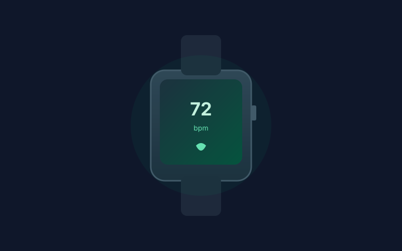

Fitbit Charge 6 Review: Precise Health Tracking Under $150
The Fitbit Charge 6 packs reliable heart-rate sensing, built-in GPS, ECG capability, and seamless Google app integration into a slim band that typically sells well under $150.
For users who want solid health metrics without a full smartwatch bulk, the Fitbit Charge 6 hits a practical sweet spot. Often available between $90 and $130 on Amazon, it delivers continuous heart-rate tracking, SpO2, sleep stages, and an ECG sensor in a lightweight aluminum body that disappears on the wrist.
The 1.04-inch AMOLED display is bright enough for quick glances and supports color stats that make steps, heart rate, and Active Zone Minutes easy to read. A haptic side button simplifies navigation and doubles as a shortcut for Google Wallet, while the overall design stays slim and comfortable for 24/7 wear.
Battery life is a genuine strength. Fitbit claims up to 7 days with typical use, and most owners see 5–7 days before needing a charge depending on GPS and always-on settings. That endurance beats daily-charge watches while still supporting built-in GPS for outdoor runs without carrying a phone.
Software integration is the quiet advantage. The Google Health app (formerly Fitbit) handles syncing cleanly, surfaces detailed sleep and recovery insights, and adds Google Maps turn-by-turn plus YouTube Music controls when your phone is nearby. ECG and EDA stress scans are available on-device for quick checks.
If you prioritize accurate daily tracking, long battery, and clean Google ecosystem support over a large screen or app store, the Fitbit Charge 6 remains one of the most dependable fitness bands you can buy under $150.
Key Takeaways
- Price Range: ~$90 – $130 (Amazon)
- Display: 1.04-inch color AMOLED
- Battery: Up to 7 days typical use
- Features: Built-in GPS, ECG, SpO2, Google Maps & Wallet, 50m water resistance